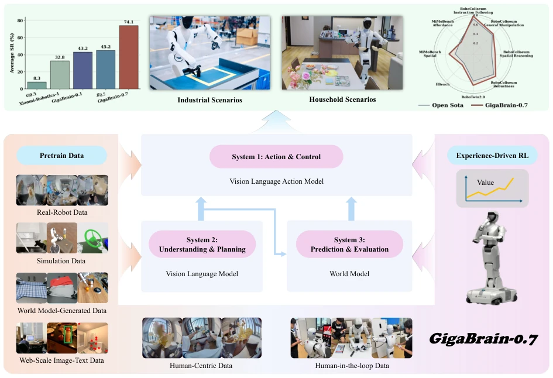
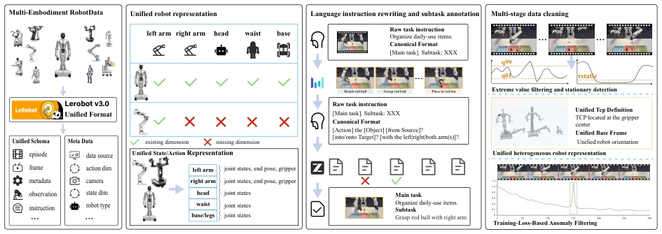
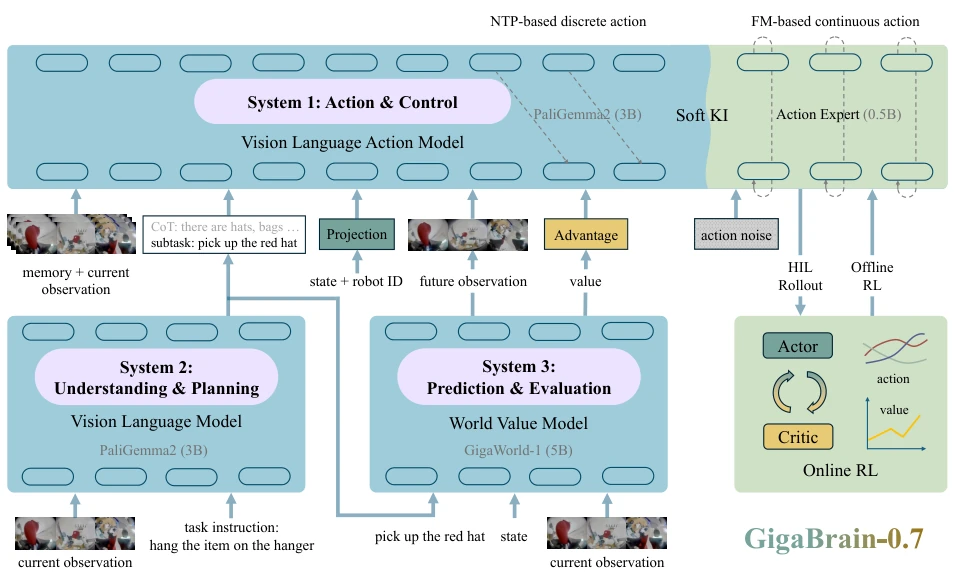
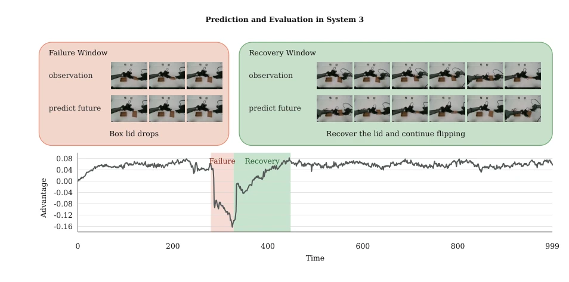
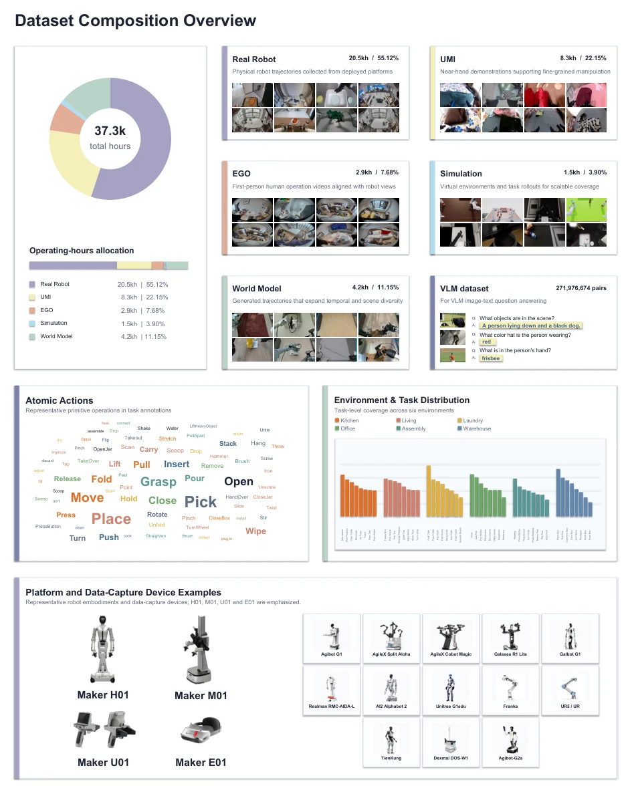
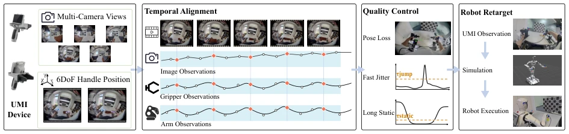
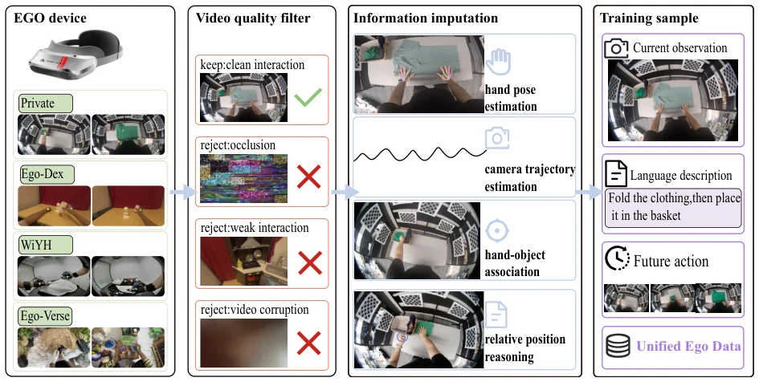
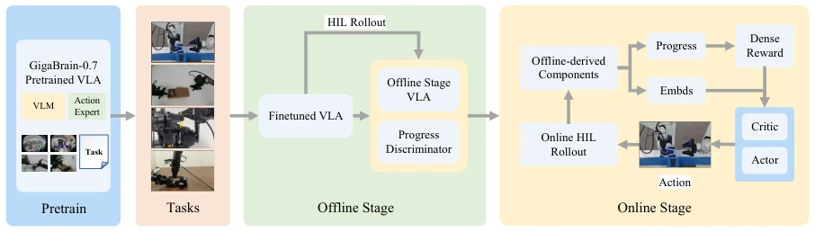
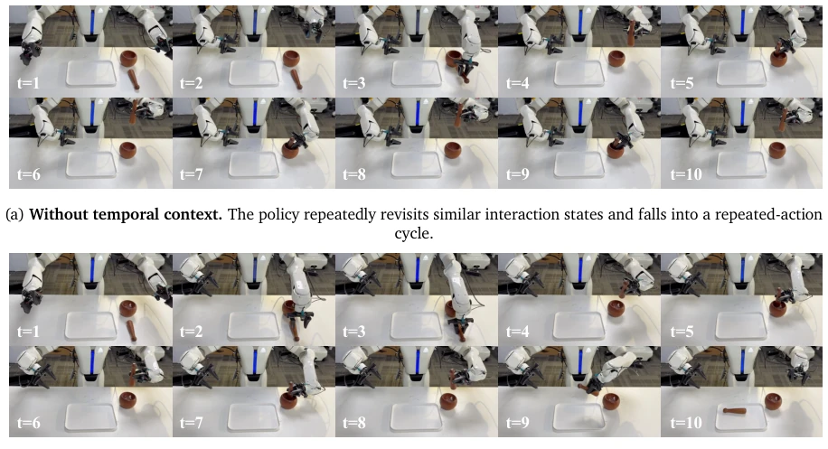
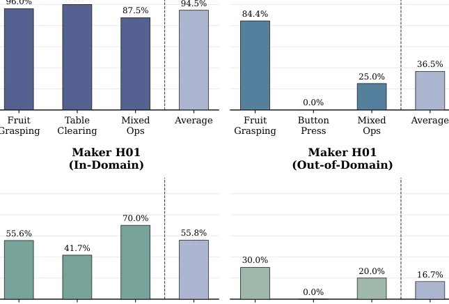

GigaBrain-0.7 attempts to solve the chronic issue of VLA models "only moving but not thinking" using a "three-system architecture". The accumulation of 37,000 hours of data is indeed impressive, but the term "emergent capabilities" is used even more aggressively than in π0. Splitting understanding, prediction, and action into three systems appears modularly clear, but how are communication overhead and latency calculated? One-stage training saves steps, but can fine-tuning methods like Soft Knowledge Insulation truly preserve VLM generalizability without being skewed by robot data? Experiments performed well on Maker H01 and AgileX, but the generalization in industrial scenarios ultimately depends on OOD testing. Overall, this is another gamble driven by data; architectural innovation is less solid than the work on data cleaning. However, since code and weights are open-sourced, the community might as well verify whether this "three-system" is truly more stable than end-to-end, or just a more glamorous coat for overfitting. After all, in the field of embodied intelligence, making it work is more important than boasting.
Although current VLA models perform strongly in structured tasks, most are limited to the reactive paradigm of "observe then act", lacking prediction of the future and evaluation of task progress [5, 6]. Existing work such as π0.5 [62] introduces hierarchical task conditions, but understanding, planning, and execution remain fragmented. The GigaBrain team points out that simply expanding data scale or network capacity cannot solve the interference problems brought by heterogeneous robot data [63, 87]. Especially lacking explicit prediction mechanisms, leading to getting stuck in local optima or repeating actions in long-horizon tasks. Therefore, a unified learning system is needed to combine heterogeneous experience with multi-form pretraining, and integrate understanding, prediction, action, and continuous improvement [27, 28]. This paper aims to solve this coordination problem through a three-system architecture, achieving cross-form and cross-scenario generalization.

Figure 1: Overview of GigaBrain-0.7. GigaBrain-0.7 is an embodied foundation-model system that coordinates understanding and planning, prediction and evaluation, and action and control through a three-system architecture. It learns from heterogeneous pretraining data and on-robot experience to support generalization and continual improvement across diverse robot embodiments and real-world scenarios.
The core is a "three-system" collaborative architecture. System 1 is responsible for action and control, generating continuous action blocks based on Flow Matching, compatible with different degrees of freedom. System 2 is responsible for understanding and planning, utilizing temporal context modeling to decompose long-horizon instructions. System 3 is responsible for prediction and evaluation, predicting future states (sub-goal images) and state values through a World Model, providing conditions for System 1. Training adopts One-stage multi-form VLA pretraining, jointly optimizing VLM backbone, continuous action expert, and multi-modal understanding goals, avoiding optimization fragmentation of multi-stage training. In terms of data, 37,000+ hours of heterogeneous trajectory data (including 20.5k hours of real robot data) were constructed, and unified format via LeRobot v3.0. Introduced Soft Knowledge Insulation mechanism, allowing action gradient fine-tuning while retaining VLM general capabilities. Additionally, continuous improvement is conducted through online reinforcement learning (RL) with human feedback, forming a closed loop. Specifically, System 1 adopts a parallel VLM-Action Expert architecture, utilizing Flow Matching to handle continuous actions, ensuring action space alignment for different form robots. System 2 decomposes tasks through hierarchical prompts, enhancing long-horizon planning capabilities. System 3 pre-trains an independent world model, outputting sub-goal images and task value signals as extra condition inputs for System 1. Data cleaning process includes format conversion, unified robot representation, language instruction rewriting, and multi-stage quality filtering, ensuring consistency of heterogeneous data. Training stages not only include pretraining but also involve post-training task-specific fine-tuning and human feedback-based reinforcement learning, achieving full pipeline coverage from perception to decision-making to optimization.

Figure 3: Real-robot data processing pipeline. Heterogeneous robot data are converted into the LeRobot v3.0 format, mapped to a unified robot representation, standardized through language-instruction rewriting and subtask annotation, and filtered through multi-stage quality control before training.

Figure 6: Architecture of GigaBrain-0.7. GigaBrain-0.7 organizes embodied intelligence into three interacting systems. System 2 performs visual-language understanding and task planning. System 3 introduces explicit prediction and evaluation by predicting future observations and estimating task-related values. System 1 inte- grates the current observation and short-term memory, subtask instructions, robot state, and predictive signals to generate executable actions through parallel discrete and continuous action pathways. The architecture further exposes interfaces for offline and online experience reinforcement, connecting perception, prediction, action, and subsequent policy improvement.
Real-robot testing was conducted on platforms such as Maker H01 and AgileX PiPER. Compared with the GigaBrain-0 series and π0.5 [62], GigaBrain-0.7 shows significant improvements in zero-shot ability, language instruction following, and post-training task success rates. Ablation experiments show that System 3's future state prediction and value evaluation signals are crucial for long-horizon tasks; performance drops after removal. Temporal context analysis shows that introducing historical interaction information can effectively break repetition action loops (Fig 9). Additionally, human-in-the-loop reinforcement learning further improved fine manipulation success rates. Data scaling study confirms that larger-scale pretraining can reduce validation loss and improve real robot behavior reliability.

Figure 10: Prediction and evaluation with the World Value Model. The model predicts both future visual observations and future state values. The inferred advantage decreases sharply when the imagined trajectory leads to failure and increases when the trajectory recovers toward successful task execution.
其他图片Other Figures

Figure 2: Composition of the GigaBrain-0.7 training corpus. The embodied trajectory corpus contains 37.3K hours of real-robot, UMI, EGO, simulation, and world-model-generated data, while the VLM corpus contains 271,976,674 image–text/question-answering samples. The figure further summarizes representative robot embodiments, data-capture devices, atomic actions, and task/environment distributions.

Figure 4: UMI data processing pipeline. Multi-camera observations, 6-DoF handle poses, and gripper states are temporally aligned, filtered for trajectory and modality quality, and retargeted to the Maker H01 end-effector frame before simulation and sampled real-robot replay validation.

Figure 5: EGO data processing pipeline. First-person manipulation videos are filtered for interaction and video quality, supplemented with hand-pose and hand–object information when necessary, and standardized across EgoDex, EgoVerse, WiYH, and in-house data sources.

Figure 7: Experience Reinforcement Pipeline. The experience reinforcement pipeline consists of three stages: supervised fine-tuning, offline reinforcement, and online reinforcement. Supervised fine-tuning establishes basic competence on complex, fine-grained out-of-domain tasks. Offline reinforcement develops progress awareness and error recovery, while online reinforcement further improves fine-grained manipulation and task success.

Figure 9: Qualitative analysis of temporal context in repeated-state manipulation. Each rollout is repre- sented by ten temporally ordered frames. Without temporal context, the policy repeatedly returns to visually similar interaction states and produces a recurring action pattern. With temporal context, recent interaction history provides additional information about the current stage of execution, enabling the policy to break the repeated-action cycle and continue toward the task goal.

Figure 12: Out-of-the-box multi-task language following of GigaBrain-0.7. We evaluate the same pretrained policy on AgileX PiPER and Maker H01 under both in-distribution and out-of-distribution settings.